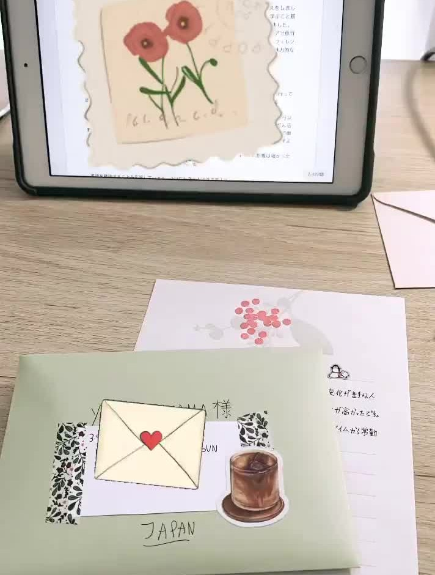

One of the things I love writing letters to people living abroad, specially if it allows me to practise other languages! Currently I have a some Japanese and South Korean pen pals to whom I write in Japanese. Sometimes it takes long for me to decipher what they actually wrote to me (specially when it comes to characters), but it's a rewarding experience when I finally manage to understand and write an answer. From time to time we exchange stationery and little gifs from our countries.
It has been 1 or 2 years since I became an avid reader. I especially like reading fiction, classics and Japanese literature. I recently discovered Goodreads SNS, where you can track how many books you read per year by setting reading goals and share and exchange opinions of the books you've read.
Since languages are hard to mantain if you're not in touch with their speakers, I try to think of ways of creating a fake linguistic immersion environment so as not to lose fluency. What I tend to do frequently is watching Japanese on-air TV channels (I actually pay for a suscription in a platform similar to Netflix) in the background while doing other stuff.